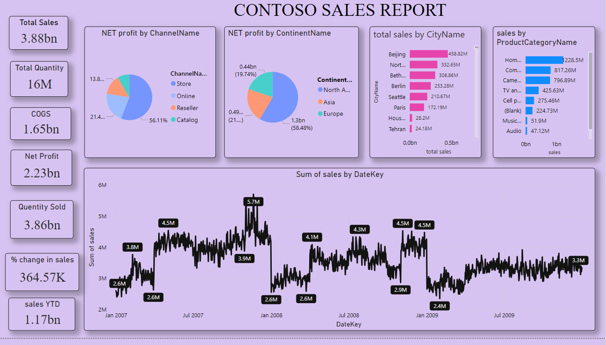

Projects
A closer look at the assignments and work below — including sources where available (GitHub repos, reports, and datasets).
CMRL Complaint Workflow Project
Built during the Customer Complaint Analyst internship at Chennai Metro Rail Limited. The project analyzed and cleaned historical complaint data, then supported workflow planning for a web-based complaint management application.
What the workflow does:
- Pulls incoming customer complaints in from email automatically.
- Imports them into a web-based complaint management system.
- Segregates each complaint by urgency level — Urgent, Important, or Normal.
- Routes the complaint to the relevant department for resolution based on that level.
- Tracks the resolution back to the customer complaint department and closes the loop with the customer.
Sources
Institutional Training Report — Cameo Corporate Services
A report documenting the institutional training completed during the Data Entry Intern role at Cameo Corporate Services Limited.
- Covers the training received on managing, organizing, and analyzing financial data.
- Uses MS Excel as the primary tool for data handling and record-keeping.
- Summarizes the practical exposure gained to corporate data workflows during the internship.
Sources
Hero MotoCorp Financial Analysis & Visualization
Completed during the Finance Analyst Intern role at Dax Ellis. An in-depth financial analysis of Hero MotoCorp Ltd, examining liquidity, profitability, debt management, capital structure, and working capital trends from 2019 to 2023 using Excel and data visualization.
Hero MotoCorp, the world's largest manufacturer of two-wheelers, has shown resilience and adaptability in a fast-changing automotive sector. This analysis explores the company's financial health through key ratios and industry benchmarks, offering insight into its stability, operational efficiency, and profitability.
Liquidity Ratios
- Current Ratio, Quick Ratio, Cash Ratio, Net Working Capital Ratio
- Trend: fluctuations with a decline in liquidity in 2023; a notable peak in working capital in 2022.
Working Capital Analysis
- Year-on-year breakdown from 2019 to 2023, compared against industry benchmarks.
- A slight downward trend in 2023 signals a need to monitor the asset-liability balance.
Debt Management
- Debt to Total Assets Ratio, Interest Coverage Ratio, Debt Service Coverage Ratio (DSCR)
- Showed stable leverage, strong interest coverage, and a sustainable debt structure.
Profitability Ratios
- Gross Profit Margin, Net Profit Margin, Return on Equity (ROE), Return on Assets (ROA)
- Despite a declining trend, metrics remained higher than industry averages.
Capital Ratios
- Debt to Equity Ratio, Return on Invested Capital (ROIC)
- A stable capital structure with moderate leverage, and effective use of capital despite a slight ROIC decline.
Tools & Skills Applied
- Microsoft Excel — pivot tables, Power Query, charting, and financial ratio formulas.
- Power BI — for dynamic visualizations.
- Accounting & finance concepts — ratio interpretation, benchmarking, and trend analysis.
Key Insights
- Hero MotoCorp maintained a healthy capital structure and strong liquidity until 2022, with signs of pressure in 2023.
- The company's profitability outperformed industry benchmarks across most years.
- Debt usage remains strategic and sustainable, with robust interest coverage.
- Capital structure is conservative, allowing flexibility for future investments.
Sources
CMRL Passenger Prediction, Phase 2
A follow-on piece of work connected to the Chennai Metro Rail Limited internship, focused on passenger prediction analysis for CMRL, phase two.
- Builds on the complaint and operations data familiarity gained during the CMRL internship.
- Focuses specifically on predicting passenger patterns as part of the phase 2 scope.
Sources
Contoso Sales Performance Dashboard
A set of Power BI dashboards built to analyze Contoso's sales performance across stores, product categories, and regions.
- Store-level sales analysis with filters for store name, quarter, and year.
- Overall sales report covering total sales, quantity sold, COGS, net profit, and year-to-date sales.
- Profit analysis by city and product category, including profit margin trends.
- Country-level sales analysis with breakdowns by continent, brand, and product name.
